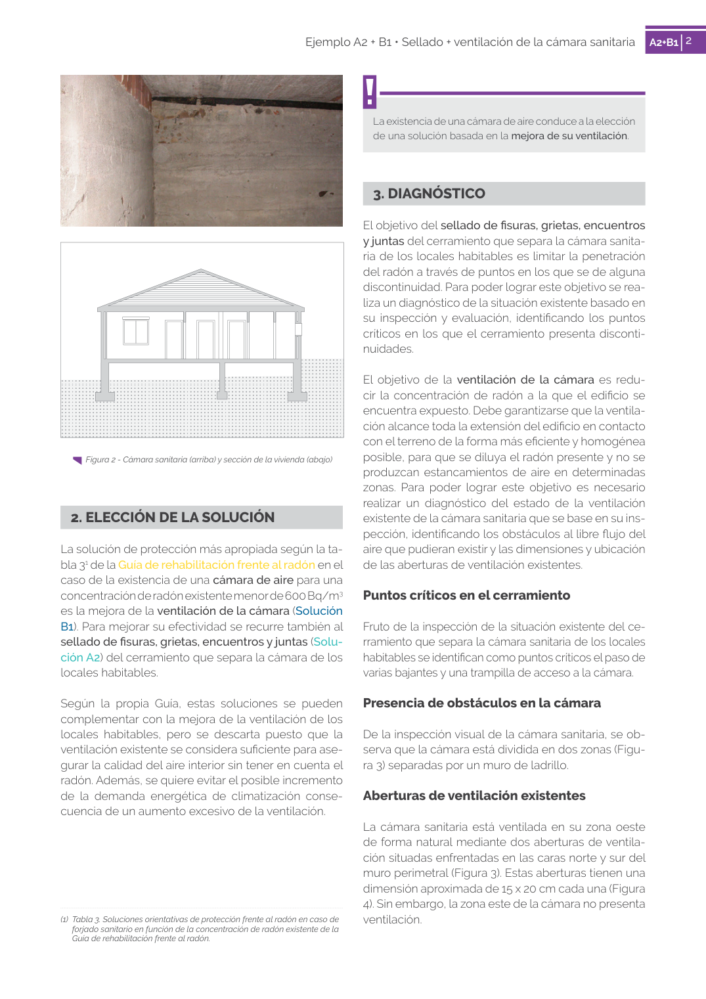
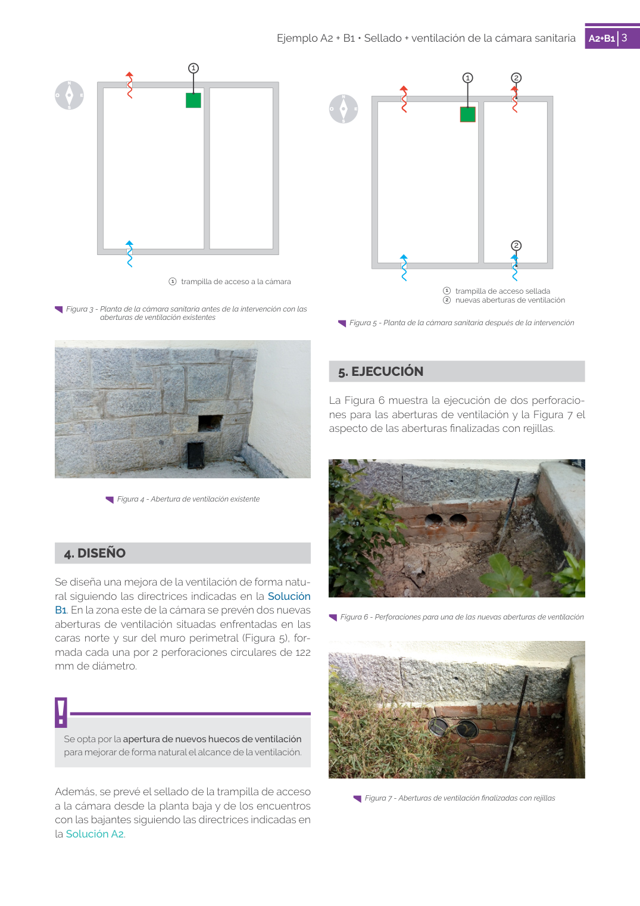

<!doctype html>
<html lang="es"><head><meta charset="utf-8">
<meta name="viewport" content="width=device-width, initial-scale=1">
<title>GUIA · Aberturas de ventilación existentes</title><link rel="stylesheet" href="../estilo.css">
</head><body>
<nav><a href="../index.html">Índice</a> › <a href="../doc/guia-pdf-f3314b0414fe-sin-fecha-e58e54b822cf.html">GUIA</a> › a0255</nav>

<header class="meta">
<p><a href="../doc/guia-pdf-f3314b0414fe-sin-fecha-e58e54b822cf.html">GUIA</a> · Aberturas de ventilación existentes · versión sin-fecha · capa guia</p>
</header>
<div class="cita"><strong>Cita:</strong> GUIA · ID técnico a0255 · Aberturas de ventilación existentes · páginas físicas pág. 70-71 (impresas: ['70', '71'])</div>
<p>Formatos: <a href="../../contenido/docs/GUIA-PDF-f3314b0414fe/sin-fecha__e58e54b822cf/apartado/a0255__aberturas-de-ventilacion-existentes.json">JSON compacto</a> · <a href="../../contenido/docs/GUIA-PDF-f3314b0414fe/sin-fecha__e58e54b822cf/apartado/a0255__aberturas-de-ventilacion-existentes.md">Markdown</a> · <a href="../../contenido/docs/GUIA-PDF-f3314b0414fe/sin-fecha__e58e54b822cf/fuente.pdf">PDF fuente</a></p>
<p><a href="../doc/guia-pdf-f3314b0414fe-sin-fecha-e58e54b822cf.html">Ámbito del documento</a> · <a href="../doc/guia-pdf-f3314b0414fe-sin-fecha-e58e54b822cf.html#ambito">texto del ámbito</a> ·
<a href="../doc/guia-pdf-f3314b0414fe-sin-fecha-e58e54b822cf.html">documento y tablas</a></p>
<nav><a href="guia-pdf-f3314b0414fe-sin-fecha-e58e54b822cf__a0254.html">← Presencia de obstáculos en la cámara</a> <a href="guia-pdf-f3314b0414fe-sin-fecha-e58e54b822cf__a0256.html">1   trampilla de acceso a la cámara →</a></nav>
<h1>Aberturas de ventilación existentes</h1>
<p>Tipo: figuras · nivel 3 · sección estimada: 3. DIAGNÓSTICO · padre: a0252</p>
<pre class="literal">Aberturas de ventilación existentes
La cámara sanitaria está ventilada en su zona oeste
de forma natural mediante dos aberturas de ventila­
ción situadas enfrentadas en las caras norte y sur del
muro perimetral (Figura 3). Estas aberturas tienen una
dimensión aproximada de 15 x 20 cm cada una (Figura
4). Sin embargo, la zona este de la cámara no presenta
ventilación.
(1)  Tabla 3. Soluciones orientativas de protección frente al radón en caso de
forjado sanitario en función de la concentración de radón existente de la
Guía de rehabilitación frente al radón.

3
Ejemplo A2 + B1 • Sellado + ventilación de la cámara sanitaria
A2+B13
Figura 3 - Planta de la cámara sanitaria antes de la intervención con las
aberturas de ventilación existentes
1</pre>
<h2>Página visual</h2><figure><a href="../../contenido/docs/GUIA-PDF-f3314b0414fe/sin-fecha__e58e54b822cf/figura/p0070.png"></a><figcaption>Página visual 70 (fuente para fórmulas/tablas/figuras)</figcaption></figure><figure><a href="../../contenido/docs/GUIA-PDF-f3314b0414fe/sin-fecha__e58e54b822cf/figura/p0071.png"></a><figcaption>Página visual 71 (fuente para fórmulas/tablas/figuras)</figcaption></figure><p class="aviso">PDF fuente redistribuible: copia fiel enlazada en esta página (SHA256 verificado).</p>
<footer>Generado estáticamente desde JSON normalizado; sin JavaScript ni servicios externos.
El JSON es la fuente; este HTML es caché reproducible.</footer>
</body></html>
